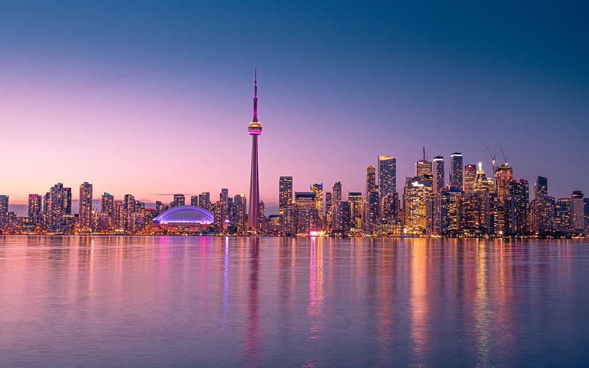
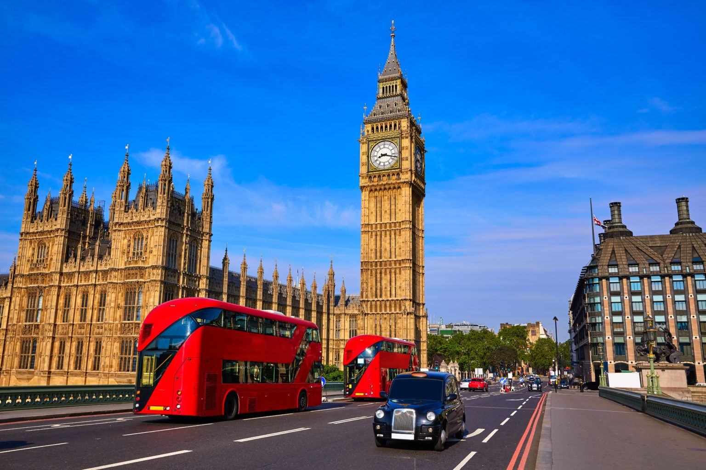

A qualidade de vida é um dos motivos que mais chama atenção para quem se pergunta se um intercâmbio na
Austrália vale a pena. Nesse sentido, é importante saber que o país tem um elevado Índice de Desenvolvimento
Humano (IDH), ficando em sexto lugar no ranking de IDH da Organização das Nações Unidas (ONU) em 2019.
A Austrália é um país incrivelmente vasto e diversificado localizado na região da Oceania. É o único país que
ocupa um continente inteiro, oferecendo uma paisagem que varia desde desertos áridos até florestas tropicais
luxuriantes e praias de areia branca.
A cultura australiana é uma mistura fascinante de influências indígenas e culturas de imigrantes de todo o
mundo. Os aborígenes australianos têm uma história que se estende por milênios, com tradições culturais e
espirituais profundas que desempenham um papel significativo na identidade australiana. Além disso, devido à
sua política de imigração diversificada, o país abriga pessoas de uma ampla variedade de origens étnicas, o
que se reflete em sua culinária, música, arte e tradições.
Canadá

Toronto, Canadá
O Canadá é um país imenso, com boas oportunidades e condições para os estudantes que desejam aprender inglês
e francês, idiomas oficiais de lá, sendo o francês ainda mais utilizado nas cidades de Montreal e Quebec. Mas
esses são apenas alguns dos pontos positivos de fazer intercâmbio no Canadá.
Estados Unidos
Nova Iorque, Estados Unidos
Um dos destinos mais cobiçados para intercâmbio é, sem dúvidas, os Estados Unidos. Como a língua inglesa é
uma das mais faladas no mundo, nada melhor que aprender o idioma com pessoas nativas. Os EUA é um país de
primeiro mundo, com uma ótima infraestrutura e diversas possibilidades.
Inglaterra

Londres, Inglaterra
A experiência de estudar em território britânico é transformadora para qualquer pessoa, que além da imersão
na língua inglesa, tem a possibilidade de conhecer outra cultura.
Nova Zelândia
Auckland, Nova Zelândia
A segurança é tão eficaz que a 14ª edição do Índice Global da Paz classificou a Nova Zelândia como o segundo
País mais pacífico do mundo em uma lista com mais de 160 participantes. Portanto, se você está buscando a
segurança como prioridade, o intercâmbio na Nova Zelândia é uma alternativa a ser considerada.